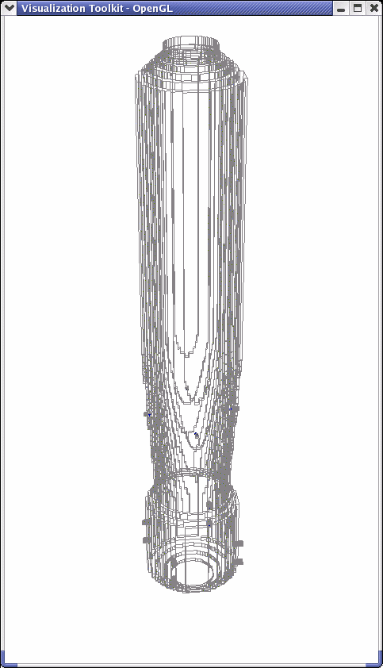
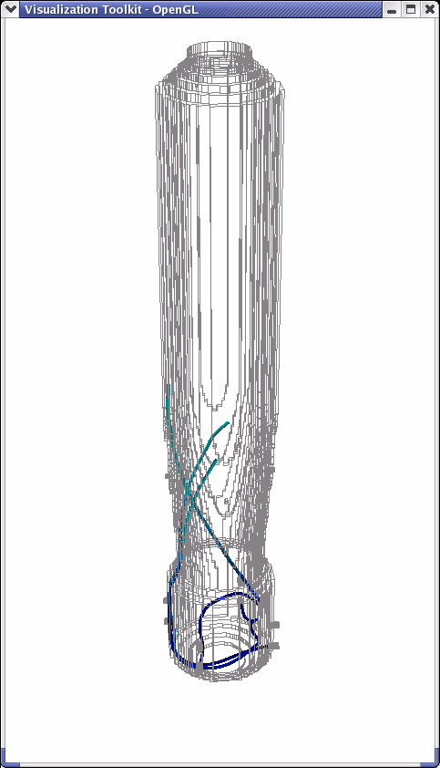
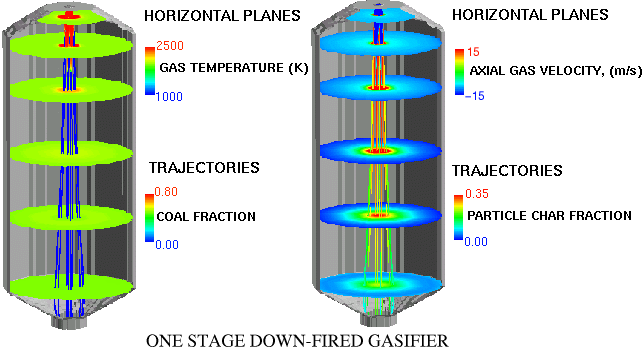
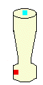
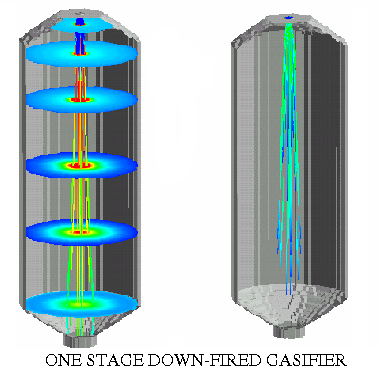
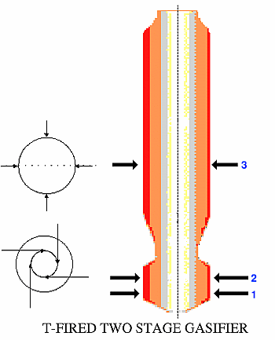

Gasifier CFD Module
The computer model used for the Gasifier Module is a CFD-based reacting flow code, GLACIER, developed by Reaction Engineering International (REI). The code couples the effects of turbulent fluid mechanics, gas-phase combustion chemistry, turbulent particle dispersion, heterogeneous particle reactions, and convective and radiative heat transfer. The REI combustion code assumes that the flow field is a continuum field that can be described locally by general conservation equations. The flow is assumed to be steady state and gas properties are determined through local mixing calculations. The fluid is assumed to be Newtonian and dilatation is neglected. The comprehensive model uses an Eulerian framework and handles either Reynolds- or Favre-averaging. The code couples the turbulent fluid mechanics and the chemical reaction process, using progress variables to track the turbulent mixing process and equilibrium chemistry to describe the chemical reaction process.
Within the model, the rate at which the primary combustion reactions occur is assumed to be limited by the rate of mixing between the fuel and the oxidizer, which is a reasonable assumption for the chemical reactions governing heat release. The thermodynamic state at each spatial location is a function of the enthalpy and the degree of mixing of mixture fractions, one of which corresponds to the coal off-gas. The effect of turbulence and mixing on mean chemical composition is incorporated by assuming that the mixture fractions are defined by a "clipped Gaussian" probability density function (pdf) having a spatially varying mean and variance. The mean and variance are computed numerically at each grid point and mean chemical species concentrations are obtained by convolution over the pdf. Specie concentrations are calculated as properties based on the local stream mixture and enthalpy. This is much more computationally efficient than tracking individual species.
Particle mechanics are solved by following the mean path or trajectory for a
discretized group or ensemble of particles in a Lagrangian reference frame.
Particle mass and momentum sources are converted from a Lagrangian to an
Eulerian reference frame where they are coupled with gas phase fluid mechanics.
The radiative intensity field is solved based on properties of the surfaces and
participating medium and the resulting local flux divergence appears as a
source term in the gas-phase energy equation.
Connections
Graphical User Interface (UI)
|
The Gasifier module can be used to model either one stage or two stage gasifiers. One stage gasifiers are typified by a single set of injectors positioned in either a down flow (shown below) or upflow design. Two stage gasifiers usually have two larger compartments separated by a thin necked center section. Two stage gasifiers use two sets of injectors fired directly into each of the larger compartments (shown at right).  |
 |
|
|
The first folder, Flows, allows the user to specify the injector properties. The user interface is organized such that each of the three available injectors is configured separately, toggled by the radio button at the top of the screen. When the One-stage Gasifier button is toggled, only the first injector level is activiated. When the Two-stage Gasifier button is toggled, then all three injector levels are activated (see schematic above). Required fields include steam Flowrate as well as slurry properties including Temperature, Flowrate, and percent Coal. The Re-Cycled Char is an externally computed value specified by the user to represent the percent char returning to the gasifier (typically from a feedback loop running through a Cyclone unit). |

|
The Misc folder prompts for the Pressure Drop across the module, as well as for information regarding the chemical properties of the coal in the slurry. The workbench provides several preprogrammed coal types:
|
|

References
- Bockelie, M.J., Denison, M.K., Chen, Z., Senior, C.L., Linjewile, T., Sarofim, A.F., "CFD modeling of Entrained Flow Gasifiers for Vision 21 Energyplex Systems," Proceedings of the 19th Annual International Pittsburgh Coal Conference, Pittsburgh, PA, USA, Sept. 24-26, 2002(c).
- Bockelie, M.J.,
- Bockelie, M.J., Swensen, D.A., Denison, M.K., Chen, Z., Senior, C.L., Sarofim, A.F., "A Computational Workbench Environment for Virtual Power Plant Simulation" , Proceedings of the 27th International Technical Conference on Coal Utilization and Fuel Systems, Clearwater, FL, USA, March 4-7, 2002(a).
- Bockelie, M.J., Swensen, D.A., Denison, M.K., Maguire, M., Chen, Z., Linjewile,, T., Senior, C.L., Sarofim, A.F., "A Process Workbench for Virtual Simulation of Vision 21 Energyplex Systems," to be presented at the 28th International Technical Conference on Coal Utilization & Fuel Systems, to be held in Clearwater, Florida, USA, March 10-13, 2003